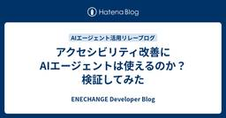
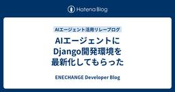
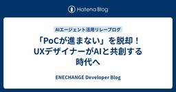
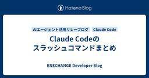

ENECHANGE Developer Blog
https://tech.enechange.co.jp/
ENECHANGE開発者ブログ
フィード

アクセシビリティ改善にAIエージェントは使えるのか？検証してみた
ENECHANGE Developer Blog
こんにちは、ENECHANGEでエンジニアをしている清水です。 今回は、AIエージェントと協働して、アクセシビリティ改善がどこまで実現できるのか、その可能性について検証してみました。 具体的には、Cursorを使ってアクセシビリティに関する問題点の洗い出しや、コードの修正を依頼してみました。
1日前

AIエージェントにDjango開発環境を最新化してもらった
ENECHANGE Developer Blog
こんにちは、ENECHANGEでエンジニアをしている児玉です。 今回は、Cursorを使ってDjango開発環境をモダナイズした体験談をお話しします。 具体的には、古くなった設定ファイル群を整理し、最新のPythonツールチェーンに移行する作業を実施しました。
3日前

「PoCが進まない」を脱却！UXデザイナーがAIと共創する時代へ
ENECHANGE Developer Blog
私たちは、問い、実験し、愛を持って体験をデザインします🧪&♥️ はじめに こんにちは、ENECHANGE EXPERIENCE部、部長の草間です。 この7月に、UXデザインとデータを管轄するエクスペリエンス部を新設し、その責任者として活動しています。 デザイナーの私がエンジニアブログに登場するのは、AIコーディングの導入で大きくワークフローが変わるからです。 従来のデザイナーとエンジニアの役割分担が大きく変化し、新しい開発手法が必要になってきたことを強く実感しています。 エクスペリエンス部は単に見た目がきれいな画面の作成や、データの収集をするチームではありません。 「社会に根ざした価値ある体験…
4日前

Claude Codeのスラッシュコマンドまとめ
ENECHANGE Developer Blog
バックエンドエンジニアの白坂です。 弊社ではClaude CodeのMaxプラン（$100/月）を一部エンジニア向けに経費申請で利用できるようにしています。 今回は、Claude Codeのスラッシュコマンドについて、公式ドキュメントと実際の/helpコマンド出力、さらに裏側のプロンプト内容について記事にまとめます。
5日前

Cursorを使ってServerless FrameworkからAWS SAMへの移行をしてみた
ENECHANGE Developer Blog
こんにちは。Energy Data Dev1チームのマネージャーの宮尾です。 社内のLambdaの運用基盤を「Serverless Framework」から「AWS SAM（Serverless Application Model）」へ移行する作業を担当しました。 Lambdaではメール送信や電力使用量ファイルの変換処理を行っています。 本記事では、その移行過程とAIエージェント「Cursor」を利用した際の所感を記載します。
9日前
AIエージェントで変わるパフォーマンス改善プロセス
ENECHANGE Developer Blog
こんにちは、ENECHANGEの杉浦です。 今回Cursorを使用して高負荷処理のメモリー圧迫の問題を解決しました。 その結果AIエージェントを利用することによる問題改善に至るプロセスの変化を体感しました。
10日前
AIと人間の協働による設計ドキュメント作成
ENECHANGE Developer Blog
こんにちは、ENECHANGEのエンジニア深澤です。 現在、AIを活用したソフトウェア設計ドキュメントの生成や整備がどこまで現実的に可能なのか、実験的に模索しています。 本記事では、その取り組みの一例をご紹介していきたいと思います。 背景と課題 多くの開発チームが直面している以下のような課題に対して、新しいアプローチを試みました。 ドキュメントの更新が実装に追いつかない バイナリ形式のドキュメントでは変更履歴の追跡が困難 チーム内での設計の共有と理解が属人化しやすい レビューとフィードバックのプロセスが不明確 ドキュメントとコードの整合性維持が困難
11日前
Claude Maxは、Rails開発の“気が利きすぎる相棒”だった
ENECHANGE Developer Blog
こんにちは、ENECHANGEでRailsエンジニアをしている酒井です。 弊社ではAIを使った開発を積極的に推進しており、私が担当するEVアプリプロジェクトではClaude Maxを本格導入しました。 コーディング補助はもちろん、RSpecの生成や仕様書の作成補助までを一貫して担っており、もはや「ちょっと試してみる」段階は完全に超えたと感じています。 生成AIを開発業務に活用する流れは広がりつつありますが、「本当に実務で使えるのか？」という疑問を持つ方も多いと思います。 この記事では、Claude Maxをコーディング支援＆仕様書作成ツールとして実際に使ってみた感想を、Railsエンジニア目線…
12日前
Claude Codeで品質の高いコードを書くために、実践から学んだコツと公式のベストプラクティス
ENECHANGE Developer Blog
こんにちは、ENECHANGEエンジニアの木原です。 今回、業務でClaude Codeを使用してリポジトリ全体に渡る中規模なリファクタリングを行いました。 その経験を通じて、Claude Codeで品質の高いコードを書くのに効果的だった指示の方法をまとめます。 また、Anthropicが提唱するワークフローのベストプラクティスも併せて紹介します。
12日前
Claude Codeカスタムスラッシュコマンド集 Part1
ENECHANGE Developer Blog
弊社ではClaude CodeのMaxプラン(100$)を一部エンジニアに向けて経費申請で使えるようにしてもらっています。今回は、Claude Codeのカスタムスラッシュコマンドを活用して、開発・業務効率を向上させるために作成したコマンドをいくつか紹介します！（タイトルに「Part1」と付けているのは、後続のリレーで同じタイトルで書きたい人がいるかもしれないからです）- カスタムスラッシュコマンドを作ることができるのは知っているけどどんなものを作ればいいのか迷っている- 他の人がどんなコマンドを作っているのか知りたいという方にぜひ読んでいただければと思います！
16日前
エンジニア採用はどこへ向かう？AIエージェント時代の“選ばれる現場”とは
ENECHANGE Developer Blog
こんにちは、ENECHANGEのシステム開発部部長の岡本です。 前回の岩本さんの記事（「あなたのAIエージェントはどっち派？ MCPツールをLLMに渡す2つの方法」）では、AIエージェントを「使う」だけでなく「作る」視点での技術的な深掘りがとても面白かったです。MCPツールのLLMへの渡し方や、実装の工夫など、現場でAIエージェントを活用している方ならではの視点がとても参考になりました。 最近、エンジニア採用の現場で「AIエージェント」がキーワードになっているのを肌で感じます。 従来は技術スタックやリモート可否が注目されていましたが、今や「AIエージェントを日常的に使えるか」が企業選びの基準と…
17日前
あなたのAIエージェントはどっち派？ MCPツールをLLMに渡す2つの方法
ENECHANGE Developer Blog
VPoTの岩本 (iwamot) です。*1 昨日の水本さんの記事を読み、AIの登場による変化を前向きにとらえる姿勢が重要だと感じました。登場前に戻ることはもうできないですものね。 今日のぼくの記事では、AIエージェントを「使う」ではなく「作る」視点での「AIエージェント活用」を取り上げます。AIエージェントの実装に興味のある方の参考になれば幸いです。 フォーカスするのは「AIエージェントからMCPツールの情報をどのようにLLMに渡すか」についてです。MCPツールの情報を渡さなければ、LLMはツールが呼び出せる（AIエージェントに呼び出しを依頼できる）ことを知らないまま回答してしまいます。 以…
18日前
新規事業室長が語るAIエージェント時代の新しいビジネスと働き方
ENECHANGE Developer Blog
こんにちは、ENECHANGEで新規事業推進室の室長をしている水本です。 昨日の深堀さんの記事（「性能改善でAIと伴走して分かったAIエージェントの実力」）を読んで、AIエージェントの可能性を改めて感じました。 私はコーディングを3日で挫折したことのある非エンジニアなので、テック寄りの内容ではなく、 AIが当たり前になる時代にビジネスや私たちの働き方がどう変わっていくのか？ 自分なりの気づきとして書いてみます。
19日前
性能改善でAIと伴走して分かったAIエージェントの実力
ENECHANGE Developer Blog
こんにちは、ENECHANGE所属のエンジニア id:tetsushi_fukabori こと深堀です。 前回の本庄さんの記事では、PMの視点からAIエージェントの「Input → Process → Output」の本質を理解された話がありました。「膨大な知識や情報と、リクエストの質が高ければ高いほど、期待通りのアウトプットを得られる」という表現、まさにその通りかと思います。 最近ある性能改善のタスクでAIエージェントを使い倒しました。 その過程でAIエージェントの得手不得手が見えてきましたので、今回はその実体験から学んだことを共有したいと思います。
20日前
PMのAIエージェント活用による超効率的なプロジェクト管理への挑戦 🚀
ENECHANGE Developer Blog
こんにちは、ENECHANGE Project Deliveryチームの本庄です。 昨日の石橋さんの記事で紹介された「週100回PoCデプロイ」のインフラ構築、本当にすごいですね！デザイナーがAIと対話するだけでプロダクトを作れる環境を整備されたとのこと。 私もProject DeliveryチームのPM（PjM）として、AIエージェントを活用したプロジェクト管理の効率化に挑戦しています。まだ少しだけしか活用できていませんが、その中で感じた驚きと可能性について正直にお話ししたいと思います。
23日前
ハッピーバイブコーディング！週100回PoCをデプロイできるインフラ作っちゃいました 🚀
ENECHANGE Developer Blog
こんにちは、ENECHANGEの石橋です。 昨日の柏木統括部長の記事で語られた「AIエージェントによる組織変革」。 まさにその具体例として、デザイナー5人が週100回※だってPoCをデプロイできるインフラを作っちゃいました！🎉 ※週100回は「それくらいのペースでデプロイしてやるぞ！」という私たちの気合いを表しています。 🚀 ENECHANGE 2.0 への挑戦 このインフラは単なる技術プロジェクトではありません。 ENECHANGE 2.0 の実現に向けた意欲的な一歩です。
24日前
統括部長の視点から見るAIエージェント時代のリーダーシップ
ENECHANGE Developer Blog
はじめに こんにちは！プロダクト開発統括部長の柏木です。 今回、AIエージェント活用リレーブログの2番目の執筆者として参加させていただくことになりました。 正直に言うと、最初は「また新しい技術トレンドか...」と思ったのですが(笑)、実際にAIエージェントを試してみて、これは本当に革新的な変化だなと実感しています。 統括部長という立場から見て、AIエージェントがもたらす組織変革の可能性にワクワクしているので、今日は私の率直な体験と今後の期待、そしてAIエージェント時代のリーダーシップについて書きたいと思います。
24日前
CTOが考えるAIエージェント時代の組織変革と技術戦略
ENECHANGE Developer Blog
はじめに はじめまして！4月からENECHANGEのCTOを務めさせて頂いています、亀田と申します。今回は弊社で進めていく、AIエージェントが当たり前になる時代に向けた組織変革と技術戦略について書かせていただきます。 「産業革命以上の大きな波が到来している」 この言葉を聞いた時、正直なところ「また大げさな表現だな」と思いました。でも、実際にCursorやClaude、DevinなどのAIツールを触ってみて、その認識を完全に覆されました。 ENECHANGEのCTOとして、技術戦略の責任者として、この変化の波に乗り遅れるわけにはいかない。むしろ、先頭に立って組織全体をAIネイティブな状態に変革し…
1ヶ月前
AWS Summit Japan 2025で登壇しました＆反省点
ENECHANGE Developer Blog
VPoTの岩本 (iwamot) です。 AWS Summit Japan 2025にて、「2年でここまで成長！AWSで育てたAI Slack botの軌跡」というタイトルで登壇の機会をいただきました。 貴重な経験でしたが、終わってみれば課題もいろいろと見えてきました。「もし次回があればこうする」という思いを込めて、記憶が新しいうちにまとめておきます。
1ヶ月前
DevinのPRを誰が作ったか分からない問題を、GitHub Actionsで解決してみた
ENECHANGE Developer Blog
こんにちは。ENECHANGEの石橋です。 最近、AI開発エージェントのDevinを活用してコード生成を行う機会が増えています。 しかし、Devinが作成したPull Requestは全て devin-ai-integration[bot] アカウントで作成されるため、実際に誰がDevinに指示を出したのかが分からないという課題に直面しました。 特に、Findy Team+のような開発者生産性測定ツールを使用している場合、誰がどれだけDevinを活用しているかを正確に計測できないのは大きな問題です。 本記事では、GitHub Actionsを活用してDevinが作成したPRに依頼者の情報を自動…
1ヶ月前
PostgreSQLのRLSをRailsへ導入する際のポイント
ENECHANGE Developer Blog
こんにちは。ENECHANGEの杉浦です。 PostgreSQLのRow Level Securityを利用したマルチテナントアーキテクチャのシステムをRailsで構築する際のポイントを記載します。 構築する際にはまりどころもあるため本記事で導入のハードルが下がれば幸いです。 一番最後にサンプルコードのリンクも記載しています。
1ヶ月前
ENECHANGE で磨いたバックエンドスキルと温かいチーム文化
ENECHANGE Developer Blog
こんにちは！2025年4月から、インターン生としてお世話になりました。高岡己太朗です。 約2ヶ月間、 ENECHANGE でフロント・バックの業務に携わらせていただきました。 この記事では、その中で学んだことや魅力についてご紹介させていただきます。 経緯 ENECHANGE が募集していた通年就業型インターンに参加するきっかけとなったのは、 学内の同級生と参加したハッカソンでした。このハッカソンを通し、API や データベースの基礎などのバックエンドを Go で実装し、バックエンドに興味を持ちました。
1ヶ月前
JWTを検証してAWS Verified Accessの経路判定をやってみた
ENECHANGE Developer Blog
CTO室のtockeysanです。 弊社のとあるプロダクトではAWS Verified Access(以降Verified Access)を使用してECS環境にアクセスをしています。 ユーザーがVerified Accessの経路でアクセスしたことをECS上で動いているRailsアプリケーション上で判定・検証する要件があったため、その実装を解説していきたいと思います。 構成 アクセス経路の判定 カスタムヘッダー JWTの検証 1. signerの確認 2. シグニチャの検証 3. 有効期限の検証 実装例 まとめ
1ヶ月前
RenderProps パターンで UI 依存のないコンポーネントライブラリを作る
ENECHANGE Developer Blog
はじめに 弊社では、自社プロダクトの開発で培ったノウハウを活かし、電力事業者向けに料金シミュレーション機能を提供しています。 ここ最近では、共通のシミュレーション Rails API とクライアントごとにカスタマイズされた React ベースの SPA を組み合わせた構成が主流です。 シミュレーションの基本的なロジックは共通していますが UI に関してはクライアントごとに多様な要望があり、これまでは既存のリポジトリをフォークし UI 部分を個別にカスタマイズするアプローチを取っていました。 しかし、この方法には以下のような問題がありました： 同じようなコードがリポジトリを跨いで量産されてしまう…
1ヶ月前
clineが暴走？テストコード生成の課題を救ったのは.clinerulesでした
ENECHANGE Developer Blog
こんにちは。ENECHANGEの川野邉です。 先日、テストコード自動生成を期待してclineを利用しましたが、思わぬ暴走や課題に直面しました。 本記事では、その課題と解決に役立った.clinerulesの活用事例を紹介します。 同じ悩みを持つ開発者の参考になれば幸いです。 docs.cline.bot この記事で書くこと・書かないこと ✅ 書くこと clineにフロントエンドのテストを書かせた際に起きた課題 課題を解決するために導入した.clinerulesと効果 （まとめ）clineにテストを書かせてみての学びやポイント ❌書かないこと clineや.clinerulesの詳しい技術的な内部…
1ヶ月前
Slack botからMCPサーバーを呼びたくて選んだ7つのツール
ENECHANGE Developer Blog
VPoTの岩本 (iwamot) です。 このたび、ENECHANGE社内で使っているSlack botからMCPサーバーを呼び出せるようにしました。おもな背景は次の2つです。 MCPの普及により、便利なMCPサーバーが続々と公開されている 社内Slack botに「外部サイトが参照できたら便利」との意見があった 今回の記事では、機能を実現するために選んだ7つのツールをご紹介します。 MCPホストツール Collmbo MCPクライアントツール Strands Agents MCPサーバーツール mcp-proxy Fetch MCP Server AWS Documentation MCP …
1ヶ月前
AWSのChatOps、Lambdaなしでも組める、組めるぞ
ENECHANGE Developer Blog
CTO室の岩本 (iwamot) です。 AWSでChatOpsしたく先行事例を調べたら、Lambdaを使う例がヒットしました。 SlackでChatOps！CodeDeployのBlue/Greenデプロイを操作する方法 - SMARTCAMP Engineer Blog (2021-01-07) しかし今なら、Amazon Q Developer in chat applications（旧称：AWS Chatbot）のカスタムアクションでLambdaをなくせそうな気がします。2023年11月に発表された機能です。 実際に試したところ、おおむね実用的な仕組みができました。 そこで今回は、A…
2ヶ月前
AWS GuardDutyで実現するVPC内通信の包括的脅威検知
ENECHANGE Developer Blog
CTO室のldrです🍒 VPC内通信の不正アクセスをリアルタイムで検知する仕組みをご紹介します。
2ヶ月前
VSCODEでのAmazon Q Developerの初期設定
ENECHANGE Developer Blog
cto室のldrです。 Amazon Q Developerがvscodeで使用できるようになっているので初期設定をメモとして残します。
3ヶ月前
ALBを共用するとどれだけ安くなる？！実際にやって分かった開発環境コスト削減事例
ENECHANGE Developer Blog
ENECHANGE所属のエンジニア id:tetsushi_fukabori こと深堀です。 記事を書くのが年単位ぶりなので書き方も忘れていました。そうか文章ってこう書くんだったねって感じです。 年初から取り組んだ内容は久しぶりに技術ブログで共有すると価値がありそうだったので書くことにします。 相変わらず開発環境のコストをどうにか下げられないか、という話題です。 今回は2025年3-4月に実施した開発環境のインフラ構成変更と、それによるコスト削減を紹介します。 タイトルの通りALBをなんやかやしてコストを削減します。 サーバーが必要なWEBサービスを公開するとどうしてもどこかにロードバランサー…
3ヶ月前